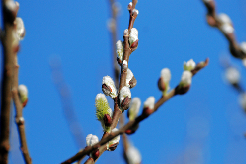
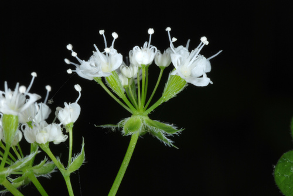
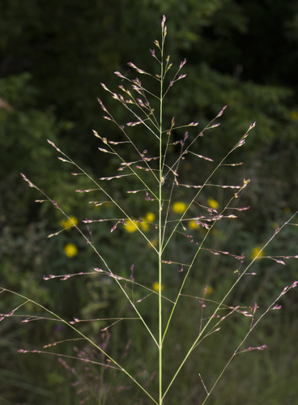
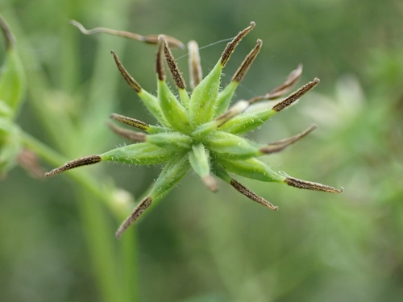

Andrena miserabilis
Andrena miserabilis native bee
Mining bees. One of the largest bee genera in the prairies; dozens of species across AB and SK.
12 documented plant relationships.
gathers pollen at
 Andreas Stiller, some rights reserved (CC BY), uploaded by Andreas Stiller") Late GoldenrodSolidago giganteaPrairie GoldenrodSolidago missouriensis
Late GoldenrodSolidago giganteaPrairie GoldenrodSolidago missouriensis
Sandbar WillowSalix interior
Smooth Sweet CicelyOsmorhiza longistylisSneezeweedHelenium autumnale Matt Lavin, some rights reserved (CC BY-SA)") Stiff GoldenrodSolidago rigida
Stiff GoldenrodSolidago rigida
SwitchgrassPanicum virgatum
Tall Meadow RueThalictrum dasycarpum
 Douglas Goldman, some rights reserved (CC BY-SA), uploaded by Douglas Goldman")
 bobkennedy, some rights reserved (CC BY-SA), uploaded by bobkennedy")